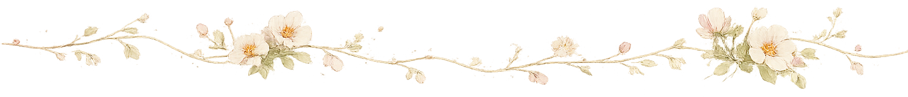
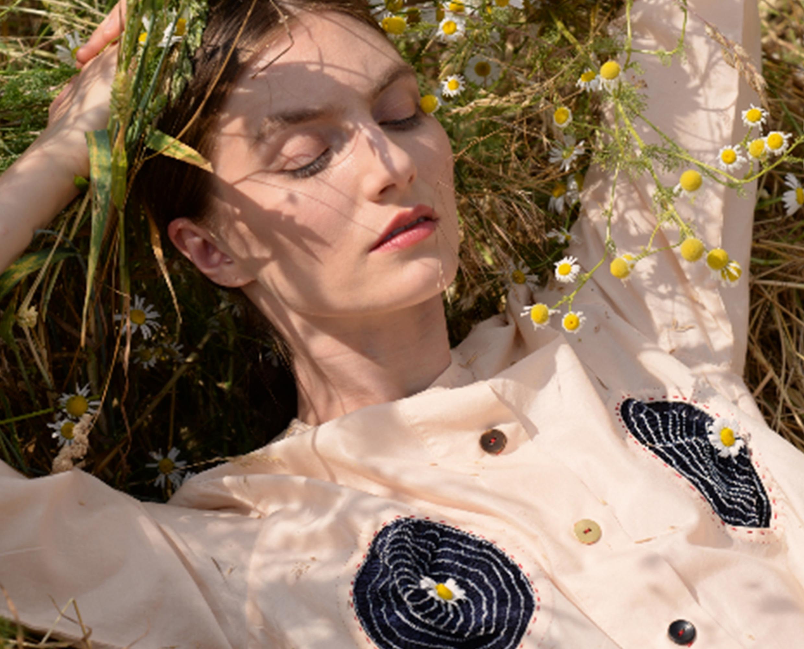
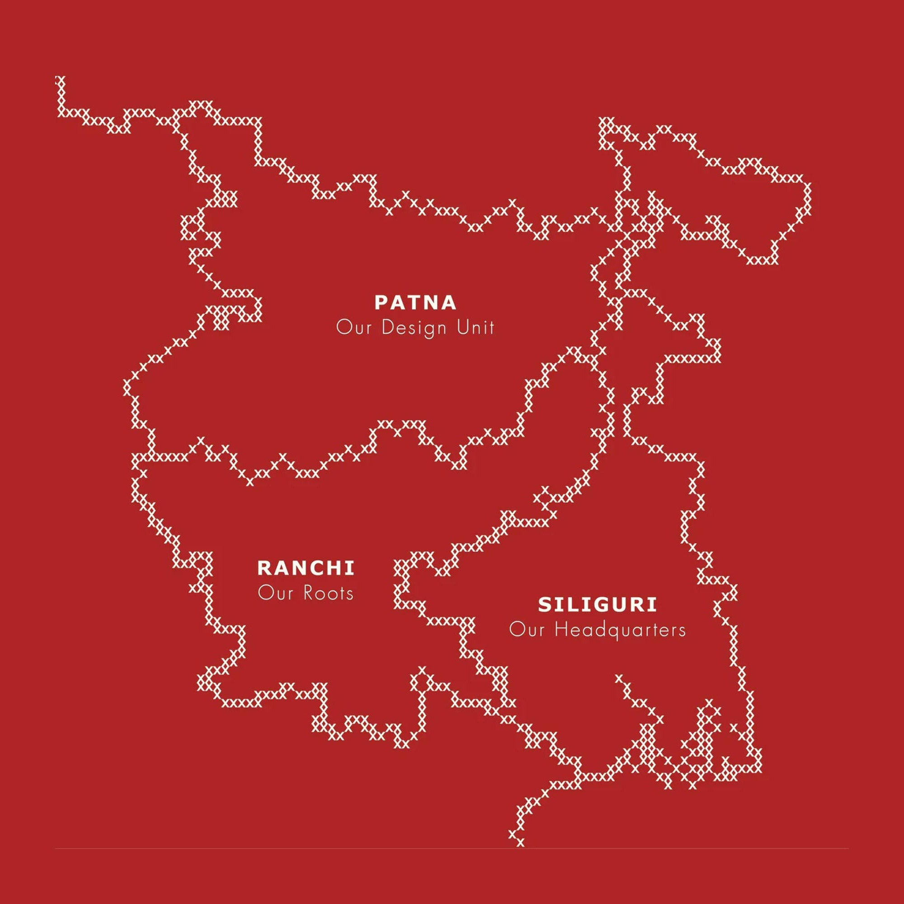

Counted by hand
Cross stitch and beadwork are built one quiet mark at a time.
For the unique and the uneven; for garments that carry the memory of the hands that made them. Ode to Odd shapes Indian craft into pieces with room for a life of their own.

Categories
Drawn as an idea before it is shaped in cloth. Browse by the silhouette that feels most like you.
From the studio

Collection
Heirloom-ready pieces shaped by handwork, memory, and ceremonial ease.
Explore collectionFeatured piece
Jewellery & Bags
Cast forms, counted beadwork, and bags made to gather marks, memories, and conversation.
Explore accessories
Where the story began
Cross stitch first found us in Ranchi. We carried its patient rhythm into every chapter that followed.
Read our storyOur craft
Cross stitch and beadwork are built one quiet mark at a time.
Handwoven silks and cottons carry the character of their making.
Small batches, careful finishes, and silhouettes with space to evolve.
The community
Moving stories
Five passing moments from the campaign, each connected to the piece in frame.